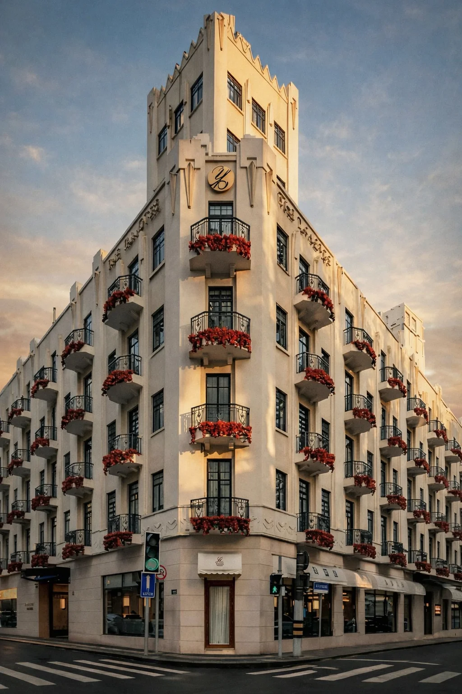
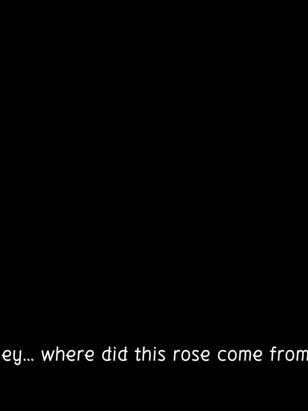
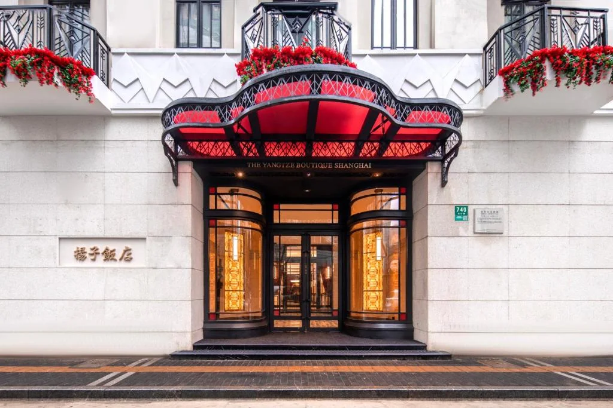

A face for the story.
A poster turns biography into a visual encounter.
The Rose of Time — Mixed Reality Experience
A voice returns.
A place remembers.
YANGTZE HOTEL · SHANGHAI · 2026

01 / THE QUESTION
What if a place could be remembered through a song?
The Rose of Time brings Yao Lee’s story into the Yangtze Hotel through mixed reality. A rose, a record and a familiar melody become invitations to pause, look closer and encounter another layer of the city.
I approached the site as a space for storytelling, rather than a building to reproduce. The experience draws on historical research, but its visual scenes are interpretive—not a literal reconstruction of the past.
02 / THROUGH THE HOTEL
Five moments from the recorded experience.
The everyday street is the starting point. A rose introduces a story that unfolds through the hotel.
Recorded on site · Web chapter guide, not a playable MR demo

03 / A LANGUAGE OF MEMORY
I carried the hotel’s vertical lines and symmetry into the visual system. Aged paper, fine borders and a recurring rose connect the invitation, dialogue panels and collected objects.
Project-created graphics inspired by historical material
A poster turns biography into a visual encounter.
The record and gramophone connect discovery with listening.
Period-inspired objects help frame a world of performance.
04 / WHEN THE SITE ANSWERED BACK

Testers looked for visual confirmation before following a sound. The next refinement is clearer visual cues alongside spatial audio.
The first interaction drew people to a busy doorway. Moving the stopping point to one side would protect both the story and everyday movement.
Dark objects and floating surfaces weakened the illusion. On-site testing made lighting, grounding and a less crowded scene important priorities.
05 / WHAT STAYS
Lydia He · Created with Lucy & Yuyao
The images on this page combine project-designed graphics, scene assets and frames from the on-site recording. Historical references and AI-assisted visual interpretations are not presented as original archival evidence.
Initial proposal ↗On-site test reflection ↗Final presentation ↗